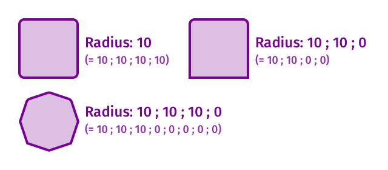
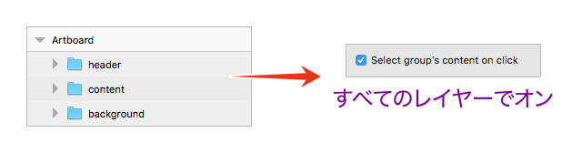
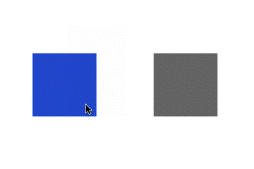
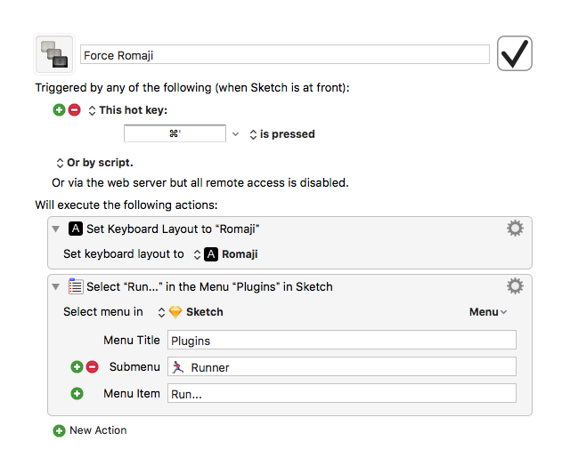

Advent Calendar向きの内容を、あえてその時期を外して。とりあえず書きたくなっただけですので、本当に役に立つかどうかの保証はありませんが、知っておくとどこかで役に立つかもしれません。
RectangleのRadiusは省略できる
個別にRadiusを設定する場合、角の数だけ「;（セミコロン）」で数値を区切って入力しますが、角の数より入力した数値のほうが少ない場合、入力した数値の最後の値が残りの角の設定になります。
例えば、四角形の右下と左下の値が一緒の場合、「10;10;0」と入力します。

Artboard直下のGroup Layerをフォルダとして使う
レイヤーをグループ化するとまとまって動くことになりますが、単にフォルダとして使いたい場合、まとまって動くと困ってしまいます。
グループレイヤーの「Select group’s content on click」オプションは、そのレイヤーに含まれているレイヤーを直接選択するための設定ですが、見方を変えるとレイヤーリスト上でレイヤーをまとめるためのフォルダとして使うことができます。
例えばヘッダーやフッターで要素をまとめたいときや、背景にしておきたいオブジェクトがあるにもかかわらず、Bring to FrontやSend to Backなどで順番をいちいち調整したくないときに使うといいかもしれません。

「Select group’s content on click」オプションがオンになっていると、選択して移動が面倒に感じるかもしれませんが、フォルダとして使っているグループ直下のレイヤーのいずれかを選択 → escキー（→フォルダとして使っているグループレイヤーに選択範囲が移動） → command ＋ option（→ポインターの位置に関係なく移動できる）を押しながらドラッグで簡単に移動できます。詳しくは「Sketch 3でレイヤーがどこにあろうと、確実にドラッグできるキーコンビネーションを紹介しますよ。」で（かなり前からある機能です）。
SymbolやShared Styleなどを階層化するときの「/」の前後にあるスペースは無視される
正直微妙すぎてTipsでもない気がしますが、階層化するときに入力する「/（スラッシュ）」の前後の半角スペースは無視されるため、スペースの有無を間違えても問題なく階層化できます。
Color PickerはアクティブなPopupの色を設定できる
Color Pickerは表示されているPopupの色を設定することができます。通常control ＋ Cは、Fill Colorをピックアップしますが、BorderのPopupが表示された状態であれば、Border Colorを設定することができます。つまり、BorderのPopupを展開してcontrol ＋ Cのショートカットを使えば、Popupのスポイトをクリックすることなくすぐに色を選択できます（Dorp Shadowとかでも有効です）。
いちいちBorderのPopupを表示するのが面倒なものぐさな方は、Border Colorのみ設定されている場合、Color Pickerを使うとBorder Colorをピックアップ可能ということを利用しましょう（ただし、Fill Colorが1つのみの場合）。
つまり、FキーでFill Colorを一時的に無効化し、control ＋ Cのショートカットでカラーピッカーを使えばBorder Colorのピックアップができるできるという寸法です。色を設定したら、もう一度Fキーを押して、Fill Colorの有効化を忘れずに。
もちろん、プラグインを使うという手もありますが…
実はSytle CopyしなくてもStyle Pasteできる
実は、普通にCommand ＋ Cでコピーし、Comannd ＋ Option ＋ VのPaste Styleでスタイルをコピー&ペーストできます。Copy Styleのショートカットは今すぐ忘れましょう。

ハイ、忘れた！
おまけ：Sketch Runnerを使うとき、IMを英数に強制する
皆さんも息を吐くようにSketch Runnerをお使いだと思いますが、タイプした文字が日本語入力になっているとちょっとイラっとしませんか？
有償のKeyboard Maestroをお持ちの方限定ですが、Sketch Runnerを実行したとき、強制的に「英数」にすることができます。
設定はこんな感じです。

ショートカットをカスタマイズしていたら適当に変更してください。